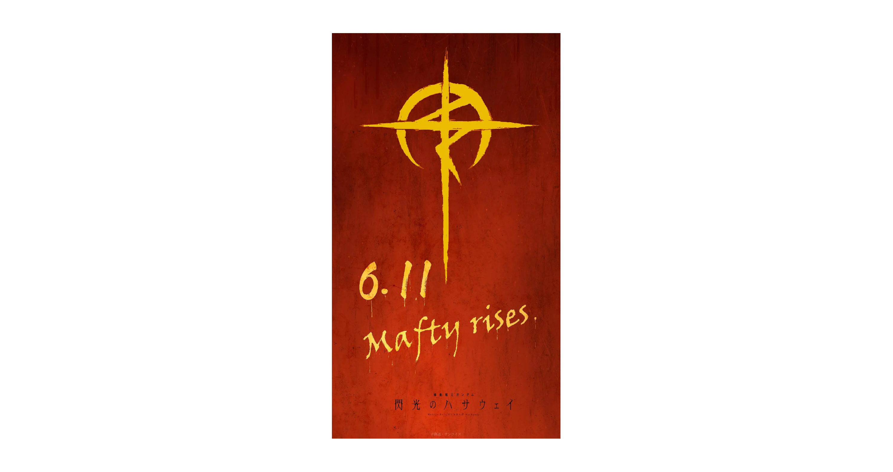
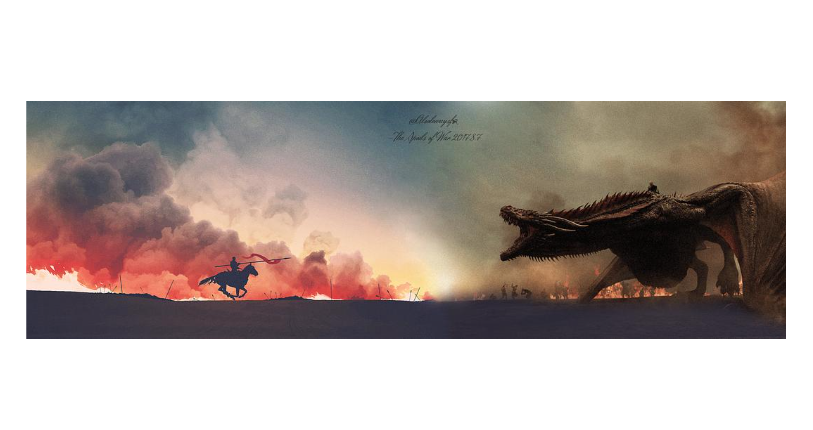
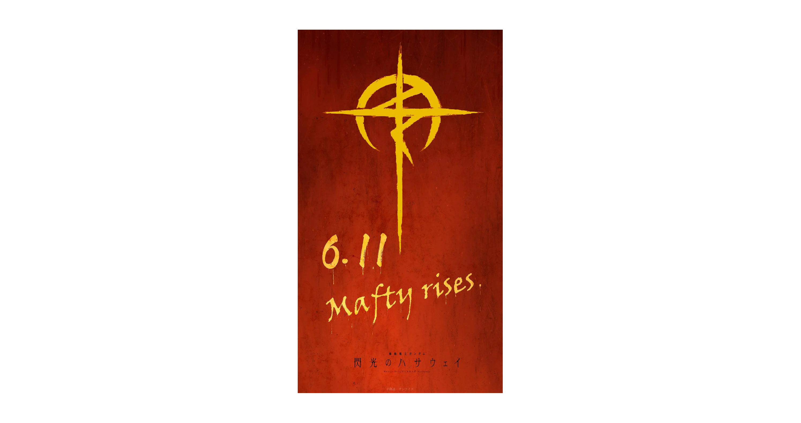
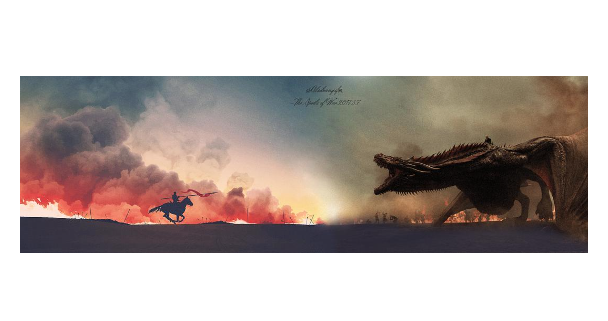

|
My name is Yiming Huang (黄奕铭 in Chinese). I am a student researcher of AI. I will receive my B.Eng. degree in Software Engineering at Beijing University of Technology, School of Software, under supervision of Prof. Xiaodan Zhang. My research interest focuses on Trustworthy AI. The long-term research goal of my study is to analyze and control the most advanced AI algorithms, models, and systems. To be specific, I am exploring the interpretability, robustness, granularity, and generalizability of AI, to cope with the explainability (XAI), safety, privacy, fairness, more refined controllability and human-interactivity problems in AI applications. I have wonderful collaborations with Ziyu Zhou@HKUST(GZ) CityMind Lab, Zihao Wang@UHawaii-Manoa. I am also looking forward to more interdisciplinary collaboration in the future.
🚩Top Message: T.B.D.
🎉News 2024.4.17: Congratulations to Ziyu - His SDformer is accepted by IJCAI '24!. It's really a interesting work!
|

|
 Yiming Huang 黄奕铭
Yiming Huang 黄奕铭
Research Projects(* indicates equal contribution, [.] is the topic, in chronological order) |

|
SDformer: Transformer with Spectral Filter and Dynamic Attention for Multivariate Time Series Long-term Forecasting
Ziyu Zhou, Gengyu Lyu, Yiming Huang, Zihao Wang, Ziyu Jia, Zhen Yang IJCAI '24 code [Time-Series, Attention] We propose a novel Transformer architecture (named SDformer) for long-term time series forecasting. It is the first time to address the problem of smooth attention distribution when modeling time series data with a large number of variates. |

|
Generic Attention-model Explainability by Weighted Relevance Accumulation
Yiming Huang, Aozhe Jia, Xiaodan Zhang, Jiawei Zhang MMAsia '23 (Old PCM, reprentative work of my undergrad research) paper / pdf / sildes / video [XAI, Attention] This work explores the explainability of multimodal attention by layer-wise relevancy accumulation with attention map, especially stressing the importance of relevancy in residual connection for better explainability. |

|
TimesNet-PM2.5: Interpretable TimesNet for Disentangling Intraperiod and Interperiod Variations in PM2.5 Prediction
Yiming Huang*, Ziyu Zhou*, Zihao Wang*, Xiaoying Zhi, Xiliang Liu Atmosphere paper [XAI, Time-Series] In this paper, we accomplish task-specific adaption of TimesNet (ICLR '23) named TimesNet-PM2.5. This specialized version improved the performance and interpretability of the PM2.5 prediction of Haikou, Hainan Province. |

|
STFM: Enhancing Autism Spectrum Disorder Classification Through Ensemble Learning-Based Fusion of Temporal and Spatial fMRI Patterns
Ziyu Zhou*, Yiming Huang*, Yining Wang*, Yin Liang PRICAI '23 paper / pdf [Medical AI, Attention] We propose a Spatio and Temporal framework based on cross-attention for better autism spectrum disorder classification. |

|
CoC-GAN: Employing Context Cluster for Unveiling a New Pathway in Image Generation
Zihao Wang*, Yiming Huang*, Ziyu Zhou* Arxiv '23 arxiv [XAI, GAN] We employ Context-Clustering Block (ICLR '23) into GAN for better interpretability. |
Education Background
|

|
Bejing University of TechnologySchool of Software, B.Eng. in Software EngineeringGPA=88.32/100=3.69/4.0 Advisor: Prof. Xiaodan Zhang 2020.09 - 2024.07, Beijing, Chaoyang |

|
Tsinghua University High SchoolHigh School Graduate2017.09 - 2020.07, Beijing, Haidian |
Miscellanea |
|
I love biking, although all of my bikes are broken now. My favorite animation: Rebuild of EVANGELION series. My favorite TV series: House of the Dragon. My favorite poem: Sailing to Byzantium. My favorite book:《文学的邀约》. My favorite retaurants: 宜宾招待所，东发道. I have lived in Beijing for more than 10 years and my hometown is Jilin, China. My motto: 缘自尘心起，逆旅天地间。 2024 Sayings 1: 憧憬是距离理解最遥远的感觉。 Usually, My Wechat Friend Cycle (Wechat Moments) is just open to true friends, as its name goes, my ideal is that only true friends in my friend cycle. But don't worry, maybe you will see it in the future after long time acquaintance. In addition, I don't open it to tearchers and elders, beacuse some of contents maybe not so serious. |
Gallery |
 



<
>
|
Pageviews |
|
Last update: 2024.4.29. This page is powered by Jon Barron's Template, ChyoD1811's CSDN blog and ChatGPT. |